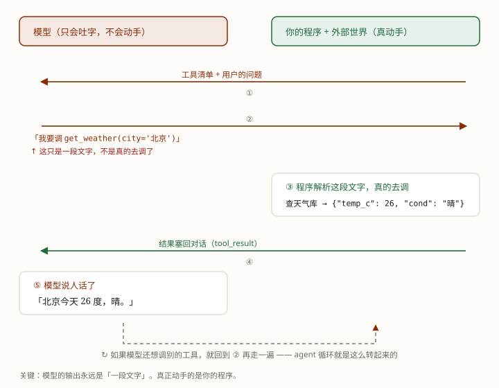

上一课的循环、工具、记忆，听着都对——但"听懂"和"跑起来"之间隔着好几步：装什么包？key 放哪？报错了先看什么？
这课从零把它跑起来。所谓 agent，全部核心代码其实只有十几行——一个循环而已。真正费心的是外面那圈防错和护栏。
学完这课，你能：从零把环境配好、跑通一个真 agent；看懂并改动它的完整代码；说清真模型会在哪翻车、代码里哪一行在兜。
agent 的全部秘密就是把一个循环转起来：推理（模型说话）→ 行动（调工具）→ 观察（结果塞回）→ 再推理……直到模型认为说完了。
循环只写一遍。厂商接口的差异全关在 model_fn 那一层——这就是"适配层"。
（不打算真跑的话，第 1～6 节可以整节跳过——那几节是装包、配 key、验通路；第 7 节的输出，第 8 节会逐句讲。）
这一课要用的 SDK 要求 Python 3.10 或更高。打开 PowerShell，先看版本：
python --version看到 Python 3.12.9 这样的输出就对了。没有 python 命令、或者一输就弹出微软商店，说明 Python 没装好或没进 PATH：去 python.org/downloads 重新装，安装第一屏记得勾上 Add python.exe to PATH。
Windows 上也可以换 py 启动器，效果一样：
py -3.12 --version接下来的包装在项目自己的虚拟环境里，不污染系统 Python。先进入仓库根目录，再建环境、激活：
cd E:\code\my_projects\learn-ai-agents # 换成你自己的仓库路径
python -m venv .venv
.\.venv\Scripts\Activate.ps1激活成功后，命令行前面会多一个 (.venv)。以后每次新开窗口跑这一课的脚本，都要先激活一次。macOS / Linux 的激活命令是 source .venv/bin/activate。
如果报"无法加载文件，因为在此系统上禁止运行脚本"：这是 PowerShell 的执行策略，不是环境坏了。对当前窗口放行一次，再激活：
Set-ExecutionPolicy -Scope Process -ExecutionPolicy Bypass
.\.venv\Scripts\Activate.ps1-Scope Process 只影响这个窗口，关掉就恢复，不会改系统设置。.venv/ 已经在 .gitignore 里，不会进 git。
环境立好了，但里面还是空的——这两个包装进去，脚本才连得上模型。确认 (.venv) 还在，然后：
python -m pip install -U openai python-dotenv卡在 Resolving dependencies 超过两三分钟，就 Ctrl+C 停掉，换本节末尾那条镜像命令重试。
两个包各管一件事：
openai —— OpenAI 官方 SDK。替我们拼请求、解析 tool_calls、处理重试和超时。不用它也能手写 HTTP，但那些坑没必要在学循环时踩。python-dotenv —— 从 .env 文件里读 key，这样 key 不写进代码。装完验一下版本：
python -c "import openai, dotenv; print(openai.__version__)"本机实测输出 3.35.1（2026-10-18）。你装到更新的版本也行，这一课只用最稳定的 Chat Completions 接口。
下载慢的话可以换国内 PyPI 镜像，例如清华源：python -m pip install -U openai python-dotenv -i https://pypi.tuna.tsinghua.edu.cn/simple。
两个包装好了，可要连模型还得先有 key。这一课默认用 DeepSeek 的 deepseek-flash：它兼容 OpenAI 的接口格式，价格低，文档有中文。步骤：
key 等于密码 + 钱包：不要写进代码、不要贴进聊天记录、不要截图发出去。下面把它放进一个不会进 git 的文件。
在仓库根目录新建一个文件，名字就叫 .env（注意不是 .env.txt），里面只写一行：
DEEPSEEK_API_KEY=sk-你的key三条格式要求：不要引号、等号两边不要空格、保存成 UTF-8。多一个空格，读出来就是错的 key。
确认它被 git 忽略：
git check-ignore -v .env能打印出 .gitignore 里那一行就对了。代码里用 load_dotenv() 读它，所以 key 永远不会出现在源码里——这份代码可以放心分享、提交。
另一种配法是直接设环境变量，不开文件：
$env:DEEPSEEK_API_KEY = "sk-..."但它只在当前窗口有效，关掉就没了；用 setx 可以永久保存，但要新开窗口才生效。日常学习推荐 .env。
三个变量名是这份脚本自己约定的，不是 DeepSeek 规定的：DEEPSEEK_API_KEY（必填）、DEEPSEEK_MODEL（默认 deepseek-flash）、DEEPSEEK_BASE_URL（默认 https://api.deepseek.com）。后两个写进 .env 也能覆盖。
正式跑之前，先做一次很小的调用：只发一句话、只让它回两个字。这一步把"key 对不对、网络通不通、模型名对不对"三件事一次验掉：
python exercises/agent/0002-build-an-agent.py --check本机实测输出：
模型：deepseek-flash 接口：https://api.deepseek.com
回复：收到
用掉 token：输入 9 / 输出 1，耗时 1.2 秒
通路正常，可以跑正式的了：python exercises/agent/0002-build-an-agent.py看到"通路正常"再往下（耗时会随着网络和模型负载变，差一两秒正常）。报错的话照这几种查（DeepSeek 官方错误码）：401 认证失败——key 不对或已失效，先查 .env 里有没有引号、空格，再确认这个 key 没被删；402 余额不足——去平台充值；429 限流——等一会儿，或看余额与并发；500 / 503——服务端的事，等一会儿重试；连不上——检查网络或代理，DEEPSEEK_BASE_URL 别多写斜杠。
还有一个最常见的坑：.env 放错了地方。脚本会从自己所在目录（exercises/agent/）逐级往上找 .env，所以放在仓库根目录能读到；放到别的盘或别的项目里就读不到了。
python exercises/agent/0002-build-an-agent.py四个问题，本机实测输出：
模型：deepseek-flash 接口：https://api.deepseek.com
==========================================================
真模型（deepseek-flash）：同一个 run_agent，看它怎么走
==========================================================
──────────────────────────────────────────────────────────
用户问：北京今天多少度？
──────────────────────────────────────────────────────────
[1] 调工具：get_weather({'city': '北京'}) -> {"city": "北京", "temp_c": 26, "cond": "晴"}
[2] 完成：北京今天气温 **26°C**，天气晴朗 ☀️
>> done，共走 2 步，耗时 2.0 秒
──────────────────────────────────────────────────────────
用户问：上海比北京热多少？
──────────────────────────────────────────────────────────
[1] 调工具：get_weather({'city': '上海'}) -> {"city": "上海", "temp_c": 28, "cond": "多云"}
[1] 调工具：get_weather({'city': '北京'}) -> {"city": "北京", "temp_c": 26, "cond": "晴"}
[2] 完成：上海今天比北京热 **2°C**：
| 城市 | 气温 | 天气 |
|---|---|---|
| 上海 | 28°C | 多云 |
| 北京 | 26°C | 晴 |
>> done，共走 2 步，耗时 2.0 秒
──────────────────────────────────────────────────────────
用户问：有哪些城市能查？
──────────────────────────────────────────────────────────
[1] 调工具：list_cities({}) -> {"cities": ["上海", "北京", "广州"]}
[2] 完成：目前可以查天气的城市有 3 个：**上海、北京、广州**。
需要我帮你查其中某个城市的天气吗？
>> done，共走 2 步，耗时 1.5 秒
──────────────────────────────────────────────────────────
用户问：魔都今天多少度？
──────────────────────────────────────────────────────────
[1] 调工具：get_weather({'city': '上海'}) -> {"city": "上海", "temp_c": 28, "cond": "多云"}
[2] 完成：魔都（上海）今天 **28°C**，多云 ☁️
>> done，共走 2 步，耗时 2.0 秒
==========================================================
这几次调用一共花掉了：
输入 token：2969 输出 token：279
按空闲时段价估算：约 0.00409 元（缓存命中会更便宜）
==========================================================（耗时和 token 数每次会有少量出入，下面的账单按当次实算。）
三个地方值得盯：
[1]。不是打印错了——模型在同一轮里一次要了两个工具。这是只看别人写好的 demo 最容易漏掉的一点，第 8、9 节都会回到它。** 和 |。模型爱用 Markdown 排版，终端不渲染，所以星号和竖线原样露出来。接进网页或聊天框才好看。每一步的耗时在 1.5～2.0 秒之间。这就是"真模型要等"的字面意思——每一步都是一次网络往返，不是本地算出来的。
先看一次工具调用的完整来回，认清楚谁在动手：

两个玩具工具，背后是个写死的小"天气库"：
def get_weather(city):
if city in WEATHER_DB:
return {"city": city, **WEATHER_DB[city]}
return {"error": f"查不到「{city}」的天气"}再往下是工具清单——上一课说的"名字＋一句话说明＋参数"三件套，模型照着它挑工具、填参数：
TOOL_LIST = [
{"type": "function",
"function": {
"name": "get_weather",
"description": "查某个城市今天的天气。返回气温（摄氏度）和天气状况。",
"parameters": {"type": "object",
"properties": {"city": {"type": "string", "description": "城市名，例如「北京」"}},
"required": ["city"]}}},
...
]注意外面多包了一层 {"type": "function", "function": {...}}——这是接口要求的信封，名字、说明、参数装在里面。真正执行时用的是另一个字典 TOOLS：名字 → 函数。两张表要同步改，漏一个就多一种翻车（第 10 节有练习）。
循环不关心 OpenAI 还是 DeepSeek。它只认两种回话：text（说完了）或 tool_use（要调工具）。把所有接口细节翻译成这两形状的，就是 model_fn：
def model_fn(messages, tools):
m = call_model(messages, tools)
if m.tool_calls:
calls = [{"name": tc.function.name,
"input": json.loads(tc.function.arguments or "{}"),
"tool_msg": (lambda tid: lambda result: {
"role": "tool", "tool_call_id": tid,
"content": json.dumps(result, ensure_ascii=False)})(tc.id)}
for tc in m.tool_calls]
return {"type": "tool_use", "calls": calls,
"history": [m.model_dump(exclude_none=True)]}
return {"type": "text", "text": (m.content or "").strip()}三个关键点：
m.tool_calls 是个列表：可能一条，也可能好几条。这里全部接住，每条都带着自己的 id（tool_call_id）。history 把模型说的那句话原样放回对话。model_dump(exclude_none=True) 把 SDK 对象转成字典，顺手去掉空字段。这条助手消息里带着 tool_calls，下一轮必须原样出现——接口靠它把结果和请求对上。tool_call_id 挂回去。少了它，接口不知道这条结果是回答哪一次调用的，直接 400。还有一处藏在 call_model 里：请求带了 extra_body={"thinking": {"type": "disabled"}}。DeepSeek 的思考模式默认是开的，而带工具时它要求把历次思考内容原样传回，否则 400。本课只看循环，关掉最省事——想了解思考模式，见 LLM 底层 · 第 5 课。
def run_agent(question, model_fn, max_steps=6):
messages = [
{"role": "system", "content": "你可以使用下列工具来回答问题。"},
{"role": "user", "content": question},
]
trace = []
for step in range(1, max_steps + 1):
reply = model_fn(messages, TOOL_LIST) # ① 推理
if reply["type"] == "text": # 模型认为说完了 → 停
trace.append((step, "完成", reply["text"]))
return {"status": "done", "answer": reply["text"], "steps": step, "trace": trace}
messages += reply["history"] # ③ 观察（上半）：它说的那句
for call in reply["calls"]: # ② 行动：模型一次可能要调好几个工具
fn = TOOLS.get(call["name"])
if fn is None: # 真模型真会编出不存在的工具
result = {"error": f"没有这个工具：{call['name']}"}
else:
try:
result = fn(**call["input"]) # 真模型真会填错参数
except Exception as e:
result = {"error": f"工具执行出错：{e}"}
trace.append((step, "调工具",
f"{call['name']}({call['input']}) -> {json.dumps(result, ensure_ascii=False)}"))
messages.append(call["tool_msg"](result)) # ③ 观察（下半）：结果逐条塞回
return {"status": "hit_max_steps", "answer": None, "steps": max_steps, "trace": trace} # 护栏五件事值得逐行看清：① 推理＝把整个 messages 交给模型函数，它回一个动作；② 行动＝你的程序真的去调工具，一个动作可能带好几条调用；③ 观察＝先把它说的那句放回去，再把每条结果挂回去——顺序反了或漏了一条，接口就报 400；④ 两个兜底（fn is None、try/except）不是摆设，真模型真会编工具、填错参数；⑤ 护栏＝max_steps 走满还没完，强制停。
run_stage() 把每次的 trace 打印出来，print_bill() 把 token 记成钱。想调试 agent，第一件事就是打印 trace——它走了几步、调了什么、拿到了什么，全在里面。
这份脚本的第一版是按"一次只回一个工具"写的，第一次真跑就撞了：
接口报错 400：Error code: 400 - {'error': {'message': "An assistant message with 'tool_calls' must be followed by tool messages responding to each 'tool_call_id'. (insufficient tool messages following tool_calls message)", ...}}原因就在上一节：问"上海比北京热多少"时，模型一轮里要了两个工具，而第一版只执行了第一个，却把整条含两个 tool_calls 的助手消息放回了历史。接口一看：两个调用只收到一条结果，非法。
这条错误就是这一课最值钱的东西：真模型的行为不由你设想。它可能：
fn is None 和 try/except 从第一天就在。max_steps 是最后一道闸。tool_call_id 怎么挂、思考模式怎么关、并行调用支不支持，各家不一样。这就是适配层存在的理由。真 agent 的代码，一半是在防模型出错。这不是不信任模型，是承认它按概率说话——概率偶尔会给你一个你没写过的形状。
光看它跑通学不到太多，这三步最值钱。每跑一次不到一分钱，改完记得改回去。
python exercises/agent/0002-build-an-agent.py --max-steps 1本机实测第一问的输出变成：
用户问：北京今天多少度？
──────────────────────────────────────────────────────────
[1] 调工具：get_weather({'city': '北京'}) -> {"city": "北京", "temp_c": 26, "cond": "晴"}
>> hit_max_steps，共走 1 步，耗时 1.1 秒工具调到了、结果也拿到了，就是没机会说人话——这就是"死循环被拦下"的现场。顺手想一下：生产里这个数字设多大，是钱和安全的取舍。
WEATHER_DB 里的 "北京" 整个删掉，再问"北京今天多少度"。工具会返回 {"error": "查不到「北京」的天气"}，观察它接下来怎么处理这条错误——如实说查不到，还是换个城市硬答？TOOL_LIST 里加一条 get_air_quality（名字、说明、参数都写），但不往 TOOLS 里加实现。再问"北京空气质量怎么样"。模型很可能真去调它，然后撞上 没有这个工具 的兜底——这就是"清单和实现不同步"的现场。这次跑四个问题，账单是 2969 输入 token ＋ 279 输出 token。按 DeepSeek 官方价目（2026-10-18 查），deepseek-flash 的价格是：
空闲时段 高峰时段
输入（缓存未命中） ¥1 / 百万 ¥2 / 百万
输入（缓存命中） ¥0.02 / 百万 ¥0.04 / 百万
输出 ¥4 / 百万 ¥8 / 百万按全价估：2969 ÷ 1,000,000 × 1 ＋ 279 ÷ 1,000,000 × 4 ≈ 0.0041 元。所以脚本打出来"约 0.00409 元"——四个问题不到半分钱。高峰时段翻倍；缓存命中还会更便宜。
但便宜不等于无脑跑。每一步都要把之前的全部对话再送一遍，问题越长、工具清单越大，输入 token 涨得越快。这就是 LLM 底层第 3 课讲的缓存为什么在 agent 里特别值钱（KV Cache 与「缓存命中」）。工程上三样护栏一个都不能少：最大步数、超时、预算上限。
Q1 --check 报 401，第一步先查什么？
Q2 循环里把"结果塞回 messages"那一步整个漏掉，会发生什么？
Q3 模型一步返回了两条 tool_calls，代码应该怎么处理？
Q4 跑完发现 >> hit_max_steps，下一步先做什么？
Q5 为什么 key 要放在 .env，而不是直接写进脚本？
tools 的定义、tool_calls 的返回、tool_call_id 怎么挂回去，以及非思考模式那个 extra_body 写法。pip install openai、OpenAI(base_url=...)、错误类型与默认重试。
前置：Agent 篇 · 第 1 课 · Agent 是什么：循环、工具、记忆（这课的每个零件都是那课讲过的）
顺着往下：Agent 篇 · 第 3 课 · MCP 与 Skill（工具的新形状）→ 第 4 课 · 多 agent 与安全（分工与边界）
LLM 底层：第 3 课 · KV Cache 与「缓存命中」（工具清单正是"稳定前缀"，吃缓存）
术语表：Agent 循环 · 工具 · 观察 · 护栏 · 轨迹